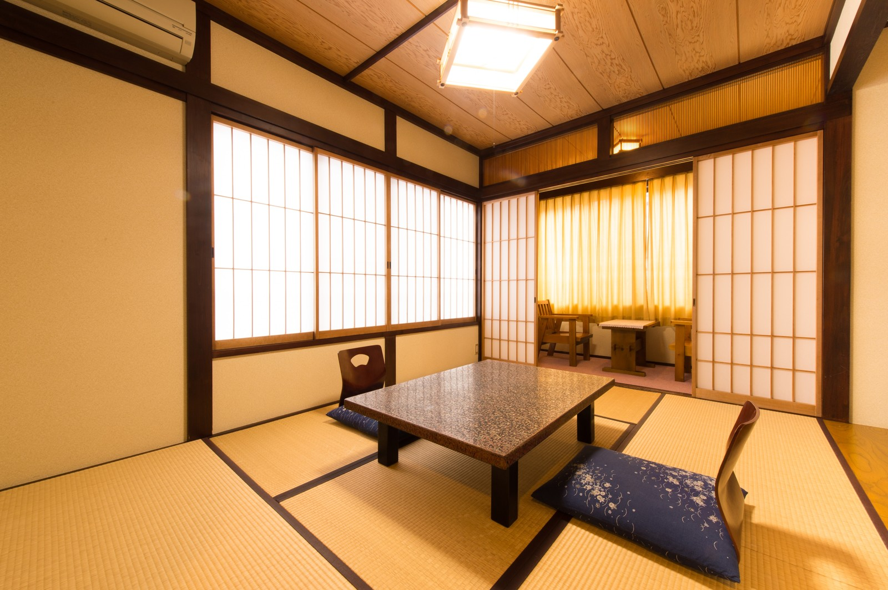
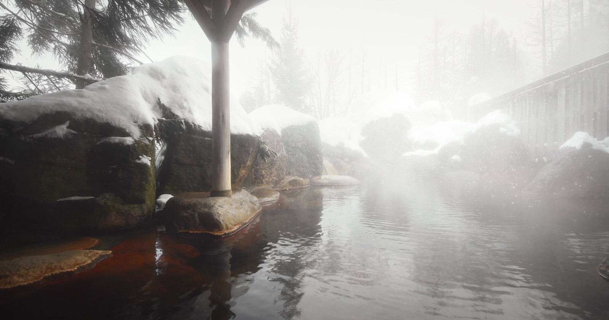

皆さん、こんにちは。「宿-DAKE-」のコラムをご覧いただき誠にありがとうございます。 このコラムでは、旅行に関する情報を記事として発信し、皆様に旅行先や滞在先のホテルを提案していきます。 旅行には行きたいけど行き先が決まらない・・・、どんな旅行先があるのか分からないので提案して欲しい・・・ そんな方がこちらの記事から行きたい旅行先・泊まりたいホテルを見つけていただけたら幸いです。
今回は関東屈指の温泉街、神奈川県が誇る箱根温泉を特集いたします。 雪を纏った富士山を望みながら箱根で温泉を楽しむには1・2月がベストシーズン、まだまだ人気の時期です。今月の旅行の候補にいかがでしょうか？ 多くの温泉宿がひしめく人気の箱根湯本の中でも、毎年人気ランキングの常連に名を連ねる「箱根大正ロマンの湯」をご紹介いたします。
その名の通り大正時代創業の歴史ある旅館で、これまで数多くの著名人に愛されてきました。 築年数100年以上の木造建築ですが、しっかりと暖房機能が整備され真冬に訪れても暖かく快適にお過ごしいただけます。 客室はシンプルな8畳間ですが、手入れされた畳の香りがしてどこか懐かしさを感じられる居心地のよい空間です。
「箱根大正ロマンの湯」の一番のおすすめポイントはなんと言っても露天風呂です。 泉質は、肌に優しいアルカリ性の単純温泉です。 慢性皮膚病や神経症に効果があると言われており、飲泉で肥満症・糖尿病にも期待がされています。 温泉で寛ぎながら、健康効果も得られれば最高ですね！
次回のご旅行に、「箱根大正ロマンの湯」はいかがでしょうか？ ご紹介したホテルの料金はリンクからすぐにお調べいただけます。 旅行・ホテルに関する情報はSNSでも発信しておりますので、是非そちらもご覧ください。 次回のコラムもお楽しみに〜！